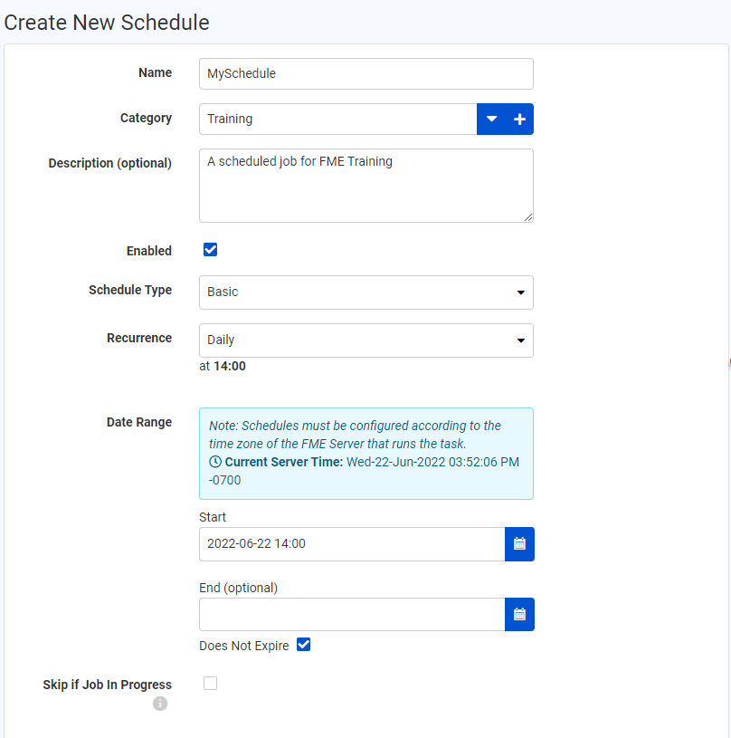
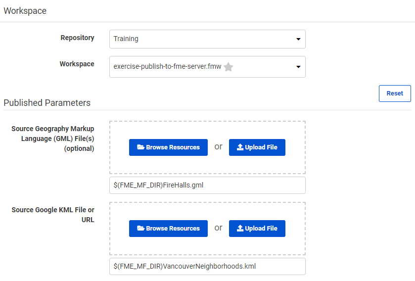

After completing this lesson, you’ll be able to:
Scheduling is the ability to configure FME Server to run a workspace in a repository at a specific time in the future. The schedule can cause the workspace to run once or on a repeating basis.
Scheduled tasks are set up in the web interface. They can be accessed through a button on the main menu:
The interface supports all the capabilities you would expect, including the ability to create, remove, duplicate, trigger, enable and disable tasks:

The Show Automations button lets the user see which automations are running on a schedule.
You can set several parameters when creating a scheduled task.
The first group of parameters includes options for naming and describing the schedule and setting up the actual schedule. Here the user has set the workspace to run once a day starting on the 22nd of June at 2:00 pm (14:00).

Notice that each schedule can be assigned to a particular category.
The parameter labeled Skip if Job in Progress provides the ability to prevent the next scheduled run of a job from being submitted if the previous run is still incomplete.
The next few parameters concentrate on the workspace to be run.
Once a workspace is selected, there will be a short pause while FME retrieves information about the workspace. It will then expose any published parameters that exist in the workspace:

Finally, there are advanced options to control job queue and job expiry (for jobs that are time-sensitive and would be no longer useful if held back past a particular time by higher priority tasks).
Once the parameters are set for a scheduled task, it is added to the main Schedules interface, where it can be easily enabled or disabled.